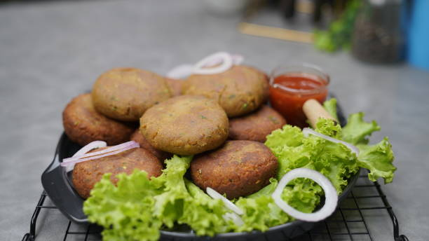
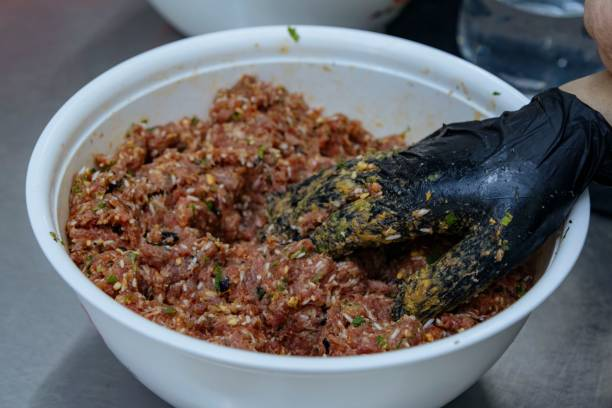
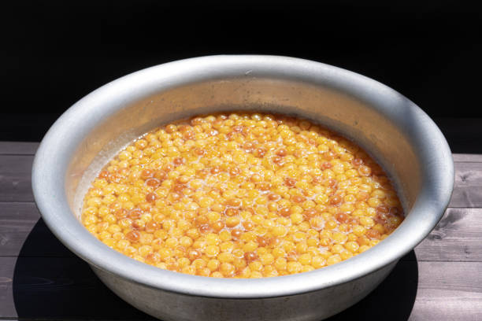
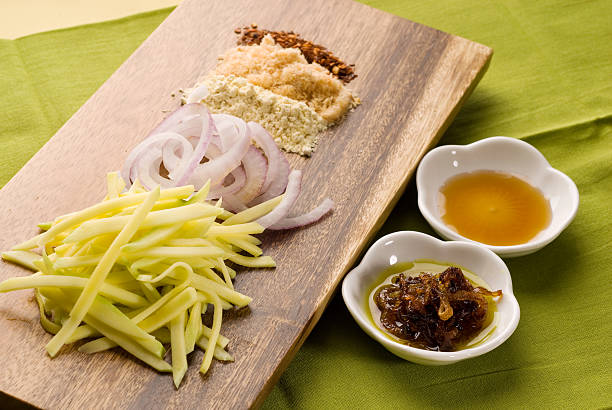
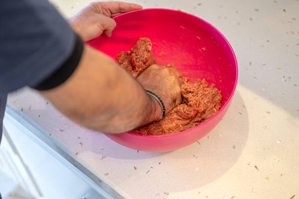
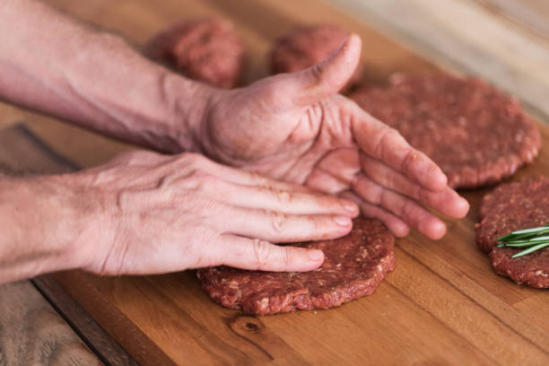
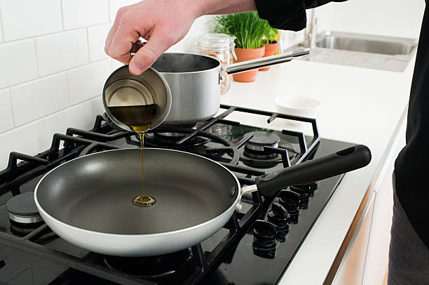
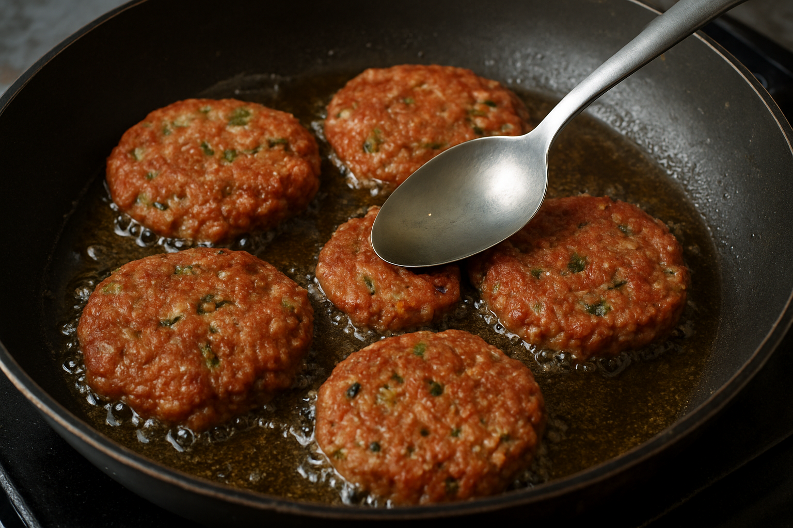

Beef Shami Kabab

Ingredients
- 500g minced beef
- 1 cup chana dal (split chickpeas), soaked and cooked
- 1 large onion, finely chopped
- 2-3 green chilies, finely chopped
- 1 tablespoon ginger-garlic paste
- 1 teaspoon cumin seeds
- 1 teaspoon coriander powder
- 1/2 teaspoon garam masala
- Salt to taste
- Fresh coriander leaves, chopped
- Oil for frying
Instruction
- In a large bowl, combine the minced beef,

- Cooked chana dal,

- Chopped onion, green chilies, ginger-garlic paste, cumin seeds, coriander powder, garam masala, salt, and fresh coriander leaves.

- Mix all the ingredients thoroughly until well combined. You can use your hands to ensure everything is evenly mixed.

- Divide the mixture into small portions and shape each portion into a flat, round patty (kabab shape).

- Heat oil in a frying pan over medium heat.

- Once the oil is hot, carefully place the kababs in the pan
Fry the kababs for about 3-4 minutes on each side or until they are golden brown and cooked through.

- Remove the kababs from the pan and place them on paper towels to drain any excess oil.

- Serve the beef shami kababs hot with mint chutney or yogurt sauce.